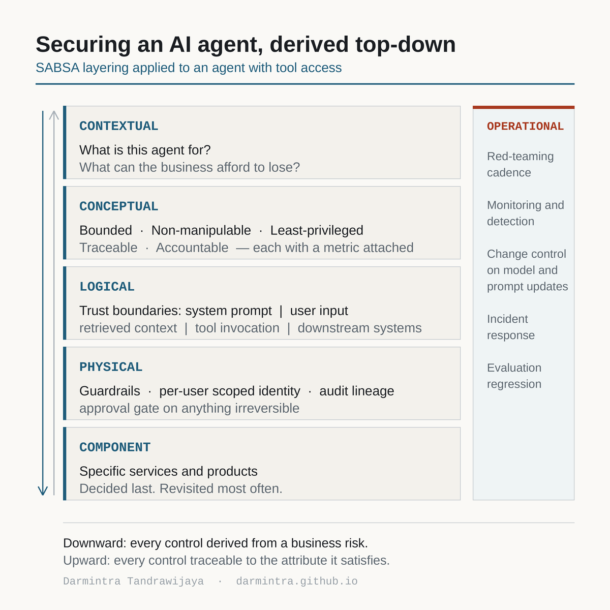

The problem with control lists
You see a lot of lists. Block prompt injection. Filter the outputs. Scope your tool permissions. All of it is reasonable advice. None of it tells you where the list came from, or how you would know if something was missing.
That gap matters more for AI systems than for most things, because there is no mature control catalogue yet. In network security you can reach for a known baseline. With an agent that can call tools, you are often designing controls that have no established reference. Which is exactly the situation where you need a method for deriving controls, not a list to copy.
So I went back to SABSA. It dates from the mid-1990s and was never written with AI in mind, and that is sort of why it works. It is framework-agnostic and traceability-driven: you start from business drivers and derive downward, with every control traceable back to the risk it addresses.
The layering

Five layers running top to bottom, with a sixth — service management, also called the operational layer — drawn vertically across them. That vertical placement comes from Sherwood's own formulation: operational concerns have to be considered during the design of each of the other five layers, not bolted on after them.
Contextual — what is this for, and what can we afford to lose?
The business view, and not yet a security question. You are establishing the agent's purpose, its decision authority (does it advise a human, draft an action for approval, or execute autonomously), the data classifications it touches, and which failure modes the business actually fears.
The useful thing to press on here is not "what is the worst that could happen." Traditional systems fail visibly. AI agents fail plausibly. The better question is "what is the worst thing that could happen while looking completely normal," and it tends to change a stakeholder's stated risk appetite considerably.
The output is a small number of written appetite statements someone senior signs. Not a control list.
Conceptual — what does "secure" mean here, measurably?
The architect's view, and the layer that earns SABSA its keep. This is where the business attributes profile lives, and it solves a problem the AI security field has not solved well: how do you measure whether an AI system is secure?
Attributes give you targets instead of intentions. For an agent:
- Bounded — percentage of actions within the defined policy envelope
- Non-manipulable — red-team injection success rate below a threshold
- Least-privileged — tool count per agent, permission drift over time
- Traceable — percentage of actions with complete audit lineage
- Accountable — percentage of high-impact actions carrying human approval
"Non-manipulable, with a red-team success rate under X per test cycle" is something you can test and hand to an auditor. "We use guardrails" is not.
Logical — where are the trust boundaries?
The designer's view. For an agent the zones are: system prompt and configuration, user input, retrieved context, the tool invocation layer, and downstream systems.
Retrieved context is the one people get wrong. It is untrusted, and it is the indirect injection vector. The tool invocation layer is where the blast radius actually lives.
The security services sitting on those boundaries are input and output mediation, context provenance, session isolation, audit lineage, and an authorisation decision service that evaluates each tool call explicitly rather than letting the model infer permission. If you have worked with Zero Trust, the mapping is direct: the tool invocation layer is a policy enforcement point, and the authorisation service is the policy decision point.
Physical — what enforces it?
The builder's view. Injection classifiers and guardrail models. Per-tool scoped identity rather than one shared service principal. Secrets held outside the prompt layer entirely. Schema-enforced output so the agent cannot emit free-form instructions downstream. Private networking. Per-session rate and cost budgets. An approval gate on anything irreversible. And an immutable log that captures prompt, response and tool call together, because separately they are much less useful.
Worth distinguishing preventive from detective controls explicitly at this layer. A permission boundary that holds even if a policy is later loosened is a different kind of assurance from an alert that fires after the fact.
Component — which products?
The tradesman's view, and deliberately last. Guardrail services, model scanners, an AI gateway, a policy engine, observability tooling wired into a SIEM.
This is the layer that changes fastest and matters least architecturally. Keep it in a separately versioned document so a vendor change does not require reopening your policy. Naming it as the layer you would decide last and revisit most often is itself a design position.
Service management — how is it run and changed?
The facilities manager's view. Red-team cadence tied to model and prompt changes. An evaluation regression suite gating deployments. Detection for injection patterns, anomalous tool-call sequences and cost exhaustion. Incident response playbooks for agent misbehaviour. Third-party model supply chain review.
One AI-specific point that catches people out: vendor-side model updates can silently invalidate your entire control set without anyone touching your architecture. If model and prompt changes are not in scope of your change management process, they need to be.
SABSA also defines a separate Service Management Matrix — the operational layer analysed against the same six interrogatives. For an agent that distinction is useful, because who retunes the guardrails, when the evaluation suite runs, and where model changes get approved are a different set of cells from the design questions.
Where my own findings sit
Two submissions from authorised bug bounty work map onto this, which is part of why I find the layering useful.
A system prompt disclosure in a production LLM agent is a failure of the Confidential attribute, caused by a trust boundary breach between user input and system configuration at the logical layer, remediated at the physical layer through output mediation.
A client-supplied account identifier in an authentication flow — which turned out to be correctly validated server-side, so not exploitable — is a Least-privileged question: an authorisation decision that should never have been reachable from client input in the first place.
The second one is the more interesting for agents. The same question restated is: when an agent calls a tool, whose authority is it using? A shared service principal means any user can reach whatever the agent can reach. That is the same authorisation-bypass class, with an agent in the middle.
Mapping it into an organisation
The mistake is treating the layers as a new process. They are not. They are artefacts that existing governance gates consume.
| Layer | Owner | Artefact | Plugs into |
|---|---|---|---|
| Contextual | Business sponsor, CISO | Risk appetite statement | Project intake, DPIA, AI use case register |
| Conceptual | Security architect | Attributes profile with metrics | Risk register, KRIs, audit control objectives |
| Logical | Security and solution architect | Trust boundary diagram, threat model | Architecture review board gate, SDLC design |
| Physical | Security engineering, platform | Control specs, reference architecture, IaC | Secure baselines, paved road, CI/CD gates |
| Component | Engineering, procurement | Approved products, config standards | Third-party risk, tech radar, exceptions |
| Service management | SecOps, service owner | Runbooks, detections, eval suite | Change management, IR, SOC backlog |
If you are adopting this, do not roll out six layers. Start with the conceptual one. The attributes profile is the smallest artefact with the highest leverage, and it immediately gives every other layer something to justify itself against.
The biggest structural win is at the physical layer: turn the controls into a reusable platform pattern so product teams inherit guardrails, scoped identity and logging rather than implementing them per project. Controls teams have to build themselves do not get built. Controls that come with the paved road do.
What I would do differently
Two things I got wrong when I started thinking about this.
I treated retrieved context as trusted. It is not, and indirect injection through a document the agent was told to read is considerably harder to reason about than a user typing something adversarial.
And I specified controls before I could say what business risk each one addressed. That works until someone senior asks why a control exists and you find you do not have an answer you believe. Deriving downward is slower and produces fewer controls. They are easier to defend.
What is still open: the metrics in the conceptual layer are easy to write and harder to instrument honestly. A red-team success rate is only meaningful relative to the effort behind the red teaming, and I do not yet have a good answer for normalising that.
References
- Sherwood, Clark and Lynas, Enterprise Security Architecture: A Business-Driven Approach
- OWASP Top 10 for Large Language Model Applications
- MITRE ATLAS
- NIST AI Risk Management Framework